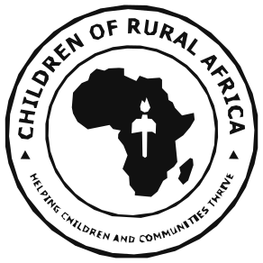

Donate

Who we are
Twenty years of building schools where there were none.
A development agency with 501(c)(3) status in the US and operations across rural Nigeria.
Our vision
To impact the lives of children throughout Africa, beginning with Nigeria.
Our mission
To change the face of education and healthcare for indigent children in Africa, one community at a time.

Our logo
The map, and the light.
The seal carries the map of Africa and a torch — the Light our programmes are meant to bring. The ring carries our name and our promise: Helping Children and Communities Thrive.
Our history
From a doctorate to a network of schools.
2006
Conceived at Cornell
Fr. Peter Obele Abue, completing a PhD in International Development, sets out to close the gap between the developed and developing world.
2006
Incorporated in the US
501(c)(3) status granted, with a founding board of Bruno Schickel, Royal Colle, Thomas Lickona and Carolann Darling. Building begins in Nigeria.
2009
Fr. Peter returns to Nigeria
Projects follow across the Diocese of Ogoja — St. Joseph’s, the Sr. Augustina Abuo Medical Clinic, Little Flower School at Ipong-Obudu.
2010s
A second board, from Western Pennsylvania
With Abode for Children Inc. of Evans City, they upgrade St. Joseph’s Schools and Orphanage and CORAfrica Farms.
2020
John Bosco Academy
Founded at Adagom, Ogoja, for refugee children arriving from Cameroon with no access to basic education.
2021
The John Stilley Schools
Founded at Victoria, Ikom, where no secondary school existed. St. Peter’s Primary is registered at Adagom 3.
Today
Two states, and a model that travels
Headquartered in Abuja, working across Cross River and Benue States, reaching IDP camps and refugee settlements.
Our philosophy
Three convictions we build on.
Rooted in Catholic Social Teaching, and reduced to three core values that govern how we choose projects and how we hand them on.
Dignity of the human person
Each child has an inalienable dignity, and should be treated as an end and never only as a means. Every child deserves the chance to achieve their dreams, no matter where they were born.
Solidarity and the common good
Faced with globalisation and the growing interdependence of peoples, the universal human family remains one. We must increase our sensitivity toward children who suffer deprivation.
Self-reliance
We look for the ways a community can design its structures so that children become independent — rather than relying permanently on outside intervention.
Helping children and communities thrive. A registered 501(c)(3) non-profit in the United States, operating in Cross River and Benue States, Nigeria.
Nigeria
No 48 Mbube Road, Opposite Govt. Technical College, Abakpa, Ogoja, Cross River State
United States
PO Box 13, Evans City, PA 16033
Contact
info@corafrica.org.ng
+234 915 314 2288
+234 915 314 2288
© 2026 Children of Rural Africa
EIN [REQUEST] · CAC [REQUEST]